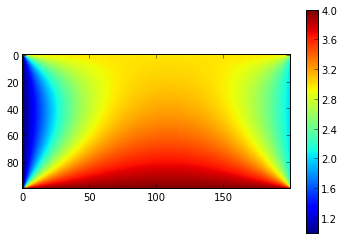

get_values_at_elements einbauen!!
The electrostatics module can be used to solve the discretized material-dependent Poisson equation for electrostatic problems in two dimensions.
The classes form the following hierarchy:
The normal procedure looks like this:
If you want to go through different boundary conditions, you can create a new inhomogeneity and use the same solver, because the matrix and the inverted matrix stay the same:
Repeat 8.-11. for all configurations. Of course, you can only reuse the solver if the matrix actually stays the same (e.g. different voltages on capacitor plates) , i.e. if you set the potential of an element which didn’t have a fixed potential before, you also have to recalculate the matrix and the inverse (using lu_solver()).
Note: the area surrounding the rectangle always has the potential 0. If you want to set different potential boundary conditions, set the elements in your code. Also note: the first coordinate (x) goes down, the second coordinate (y) goes right - the coordinate system is turned 90 degrees clockwise against the “standard” coordinate system.
The whole example, with meaningful boundary conditions:
from quantumcapacitance.electrostatics import *
height=100
width=200
laplace=Laplacian2D2ndOrderWithMaterials(1e-9,1e-9)
dielectricity=1.
my_rectangle=Rectangle(height,width,dielectricity,laplace)
for x in range(height):
my_rectangle[x,0].potential=1
my_rectangle[x,width-1].potential=2
for y in range(width):
my_rectangle[0,y].potential=3
my_rectangle[height-1,y].potential=4
my_container=Container((my_rectangle,))
solver,inhomogeneity=my_container.lu_solver()
solution=solver(inhomogeneity)
imshow(my_container.vector_to_datamatrix(solution)[0])
colorbar()
The output:
Wieso geht das Bild manchmal nicht??
That’s how it’s done!
After creating a Rectangle, you can access its elements using the [] operator. Use i and j as row and column index:
my_container[12,14].potential=10
You can set the following properties (also documented in the constructor of Rectangle:
Properties connected with quantum capacitance:
The container classes are responsible for
At the moment, there are two classes:
Features of the container classes (besides gluing):
PeriodicContainer.lu_solver(): the most important function of the container classes. It performs an LU decomposition and returns a solver function that can be applied to several inhomogeneities (=different boundary conditions).
existing solution for this system.
PeriodicContainer.solve_and_plot(): Solve the system with the current boundary conditions and plot.
PeriodicContainer.vector_to_datamatrix(): Create a “picture matrix” of a given solution of the system (=a 2D representation of the solution vector). You can use this to export the solution (e.g. for interpolation) or plot it using imshow().
PeriodicContainer.apply_operator(): Apply an operator to a solution of the system and return the result.
PeriodicContainer.charge(): Calculate the charge density for a given solution.
The boundary conditions of your system will be given by an arrangement of objects within the calculation area. Using lists, you can very conveniently define those objects and then set the boundary conditions (also repeatedly):
#Set parameters
height=100
width=50
dx=1e-9
epsilon_SiO2=3.9
sidegate_voltage=5
backgate_voltages=numpy.arange(-5,5,0.5)
#Create operator, rectangle and container
lapl=Laplacian2D2ndOrderWithMaterials(dx,dx)
my_rectangle=Rectangle(height,width,1.,lapl)
my_container=Container((my_rectangle,))
#Define the sections using lists. Later on, we never have to use
#the explicit coordinates of the elements again.
backgate=[my_rectangle[height-1,y] for y in range(width)] #<<<
sidegate=[my_rectangle[height/2,y] for y in range(width/2-5)] #<<<
topgate=[my_rectangle[height/2,y] for y in range(width/2,width)] #<<<
dielectric_medium=[my_rectangle[x,y] for x in range(height/2,height) #<<<
for y in range(width)] #<<<
#Set the boundary conditions
for element in sidegate: #<<<
element.potential=sidegate_voltage #<<<
for element in dielectric_medium: #<<<
element.epsilon=epsilon_SiO2 #<<<
#Although you will change that value later, you have to set it before
#you calculate the LU decomposition so that the element knows that it
#has a Dirichlet boundary condition.
for element in backgate:
element.potential=0
#Solve system.
solve,inhom=my_container.lu_solver()
result_charges=[]
#Loop over backgate voltage
for backgate_voltage in backgate_voltages:
for element in backgate: #<<<
element.potential=backgate_voltage #<<<
#Solve system for this boundary condition.
inhom=my_container.create_inhomogeneity()
solution=solve(inhom)
#Now, do something with the solution. We will save the charge
#of the back- and topgate to a list.
topgate_charge=my_container.charge(solution,lapl,sidegate) #<<<
backgate_charge=my_container.charge(solution,lapl,backgate) #<<<
result_charges.append((topgate_charge,backgate_charge))
#...plot or export data...
There are how-to examples in the Simple module - see Code examples.
Container contains one or more rectangles and is responsible for gathering the submatrices and sub-inhomogeneities created by the Rectangle objects, putting them into one matrix/vector and solving the system.
rectangle_list: List of rectangles participating in the calculation.
Invoke connect() afterwards to set the connection between the rectangles.
vec: Solution vector to apply the operator onto. finitedifference_operator: The operator. elements: Specific elements to apply the operator onto. If None, it is applied to all elements.
If the operator includes points which are not within the calculated area (=rectangle + those connected to it), they are implicitly assumed to be zero.
Return: result: Result of the operator on the vector. If elements=None (=all elements), this can be plotted with simple_plot().
Calculate the charge with a given operator. This is a wrapper for apply_operator() which additionally multiplies with epsilon_0.
The connect function sets the relationship of one rectangle in the container to an other rectangle.
align: How the other rectangle is aligned relative to the first rectangle. Possible values are ‘top’,’bottom’,’left’ and ‘right’. position: Position of the other rectangle relative to the first rectangle. Possible values are ‘top’,’bottom’,’left’ and ‘right’. offset: offset vector in lattice units, starting from the position given by align and position viceversa: equally connect other rectangle automatically. Default is True.
align=’top’ or ‘bottom’ have to be combined with position=’right’ or ‘left’ and vice versa!
Create inhomogeneity for the whole container. You can change the boundary condition values (e.g. different voltage) and create the new inhomogeneity.
Create the system matrix and solve the system by LU decomposition.
Return: solver: Function that gives the solution x for a given inhomogenity b. inhomogeneity: Inhomogeneity of the current configuration.
Example: solver,inhomogeneity=my_container.lu_solver() x=solver(inhomogeneity)
Creates a data matrix out of a solution vector of this system that can be plotted using imshow() or used for export.
vec: Vector that is a solution for this system.
Return: datamatrix: Matrix, plottable with imshow(). extent: Plot range parameter for imshow().
Example: datamatrix,extent = my_container.vector_to_datamatrix(vec) imshow(data,extent=extent)
Element describes a single grid point/discretization element in a geometry. It saves the rectangle it belongs to (rect), its position (i,j) within its rectangle. It supplies a function matrixelements() which, given an operator, returns the matrix elements of the element to its neighbours and the inhomogeneity of the element.
i: Row index j: Column index potential: If potential is None, the element is a normal gridpoint.
Otherwise, the element has a fixed potential (i.e. a metal/a capacitor).
charge_fermi_energy_dependence: Like the former, but the other way round. fermi_energy: If the Fermi energy depends on the number of charge carriers, the fermi energy (=applied voltage e.g. by a battery)
can be different from the electrostatic potential. fermi_energy_charge_dependence has to be defined in this case. Then you can calculate the quantum capacitance of the system. If fermi_energy_charge_dependence=None, then fermi_energy=potential.
epsilon: Relative dielectrical constant. neumannbc: The slope along x or y direction can be fixed, e.g. for a neumann boundary condition.
E.g. neumannbc=(14,’y’) or neumannbc=(0,’x’). neumannbc and potential cannot be used at the same time. Charge has to be 0 (=default value). Values != 0 do not seem to work right (see comments).
Charge of element
Dependence of charge on Fermi energy
Dielectric constant of Element
Electrochemical potential of Element
Dependence of Fermi energy on charge
Row index of Element
Column index of Element
Returns the matrix elements of the current element to its neighbours.
finitedifference_operator: The discretized operator of the differential equation.
Neumann boundary condition of Element
Electrostatic potential of Element
Abstract basis class for finite difference operators. A class derived from it has to supply variables for dx and dy and a function which returns the matrix elements between the current basis element and its neighbours (see e.g. Laplacian2D2ndOrderWithMaterials)
2nd order discreticed Laplace operator in two dimensions.
Default constructor, dx and dy are the length and width of the element.
Returns the matrix elements between the main element (i,j) and its neighbours, which are:
(i,j) -4 (i+1,j) 1 (i-1,j) 1 (i,j+1) 1
...divided by dx*dy.
2nd order discreticed Laplace operator in two dimensions for a electrostatic problem with dielectric materials.
Default constructor, dx and dy are the length and width of the element.
Returns the matrix elements between the main element (i,j) and its neighbours, which are:
(i,j) -4 (i+1,j) 1 (i-1,j) 1 (i,j+1) 1
...divided by dx*dy and with a factor describing the dielectric property.
current element, e.g. my_neighbours(0,0) gibts the current element, my_neighbours(1,0) the one under it etc.
eps1
Contains a single rectangle which is periodically repeated in one direction. (by placing copies of itself next to it).
rectangle: The rectangle to repeat. mode: ‘x’: The rectangle is repeated in x direction only (default).
‘y’: The rectangle is repeated in y direction only. ‘xy’:The rectangle is repeated in x and y direction.
vec: Solution vector to apply the operator onto. finitedifference_operator: The operator. elements: Specific elements to apply the operator onto. If None, it is applied to all elements.
If the operator includes points which are not within the calculated area (=rectangle + those connected to it), they are implicitly assumed to be zero.
Return: result: Result of the operator on the vector. If elements=None (=all elements), this can be plotted with simple_plot().
Calculate the charge with a given operator. This is a wrapper for apply_operator() which additionally multiplies with epsilon_0.
Create inhomogeneity for the whole container. You can change the boundary condition values (e.g. different voltage) and create the new inhomogeneity.
Create matrix for the whole container. The solution of the differential equation
Get values of given elements in solution vector.
vec: solution vector elements: list of elements to get the solution at
Create the system matrix and solve the system by LU decomposition.
Return: solver: Function that gives the solution x for a given inhomogenity b. inhomogeneity: Inhomogeneity of the current configuration.
Example: solver,inhomogeneity=my_container.lu_solver() x=solver(inhomogeneity)
Creates a data matrix out of a solution vector of this system that can be plotted using imshow().
vec: Vector that is a solution for this system.
Return: datamatrix: Matrix, plottable with imshow(). extent: Plot range parameter for imshow().
Example: datamatrix,extent = my_container.vector_to_datamatrix(vec) imshow(data,extent=extent)
Rectangle describes a rectangular geometry/grid, containing of mxn elements. It goes through all its element objects and creates the matrices and inhomogeneities, according to the geometry and the boundary conditions, described in the elements.
m: Number of rows n: Number of columns epsilon: Relative dielectric constant finitedifference_operator: The operator of the differential equation. fermi_energy_charge_dependence: How the fermi energy of the material depends on the charge. Default is None.
Mind that this setting assumes that the element is in a homogeneous environment.
Create matrices. The rectangle may be connected with other rectangles (the Container class takes care of that). The function creates the matrices for the interaction with itself and with every other rectangle it is connected to.